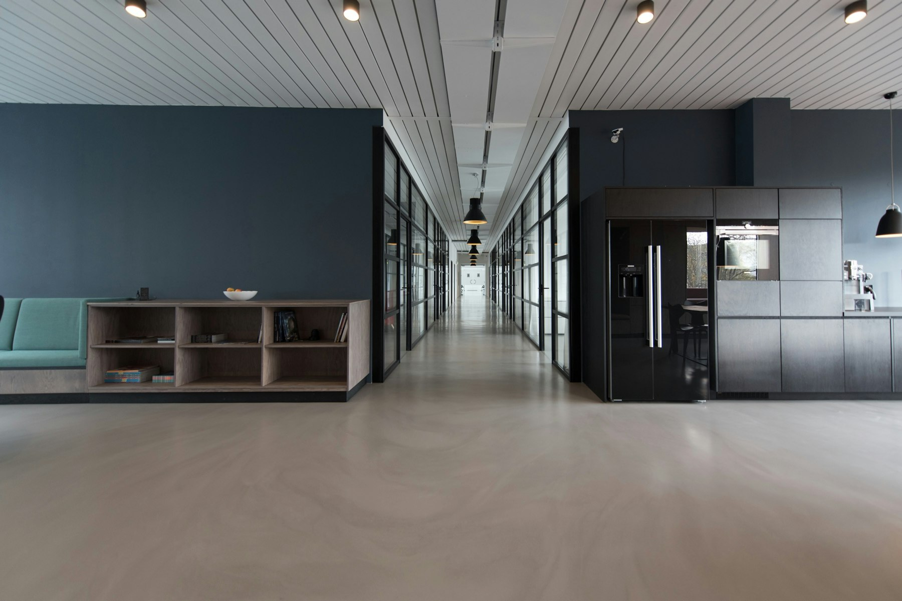

Yama · The Fifth Principle · 05
Aparigraha
Non-accumulation
Not the refusal of comfort, but the steady choice to carry no more of it than the keeping of life requires.
The word
Brahmacarya turns the gaze inward. Aparigraha turns it out.
ब्रह्मचर्य
The subject
In the enjoyment of any object, control over the subjectivity — how the mind holds the thing — is Brahmacarya. The work done within.
अपरिग्रह
The object
Control over the objectivity — how many things the mind gathers around itself — is Aparigraha. Non-indulgence in amenities and comforts superfluous to the preservation of life.
Deharakśátiriktabhogasádhanásviikaro’parigraha.
To take no possession of the means of enjoyment beyond what protects the body — that is Aparigraha.What life requires
First, the floor beneath the practice.
For existence we need food, clothing, a house to live in — and provision for old age, money and cultivable land for those who depend on us. Aparigraha never asks you to drop below that. It begins only above it, where comfort starts to outrun what the keeping of life actually needs.

The minimum is not fixed
Place
Wool is needless in an Indian summer — and keeps a body alive through a Siberian winter.
The same garment is excess in one place and necessity in another.
A warning
Poverty is not the practice.
Advocating raw gur in the age of sugar, or the bullock-cart in the age of railways, has no meaning here. Neglect the time you live in and you make yourself unfit for the world and have to withdraw from it. Aparigraha is not the worship of the primitive. It measures the need of the person you actually are, here, now.
Who draws the line
Society can set the ceiling. Only you can find the floor.
The collective
It caps the excess
Society can decide that no one holds more than so much money, so many houses, so much land. A useful ceiling. But it cannot ration what each mouth eats or each whim spends — the voracious overeat, the luxurious overspend.
The individual
You set the floor
What is left to your own discretion rests on your own idea of comfort. So the cap helps, but the complete establishment in Aparigraha ultimately depends on you. No limit imposed from outside can finish the work.
Cooperate with the limit, and the rest is your own quiet accounting.

What it really is
An endless fight to need a little less.
Aparigraha is an endless fight to reduce one’s own objects of comfort out of sympathy for the common people — once your own life, and your family’s, stands secure in body, mind and spirit. The things will rise and fall with person, place and time. The definition does not. It holds for everyone, everywhere, always.
Here the five Yama close. The war waged outward, against every pull of greed, now turns inward — toward Shaoca, the cleansing of the body and the mind it leaves behind.
A Guide to Human Conduct · after Shrii Shrii Ánandamúrti